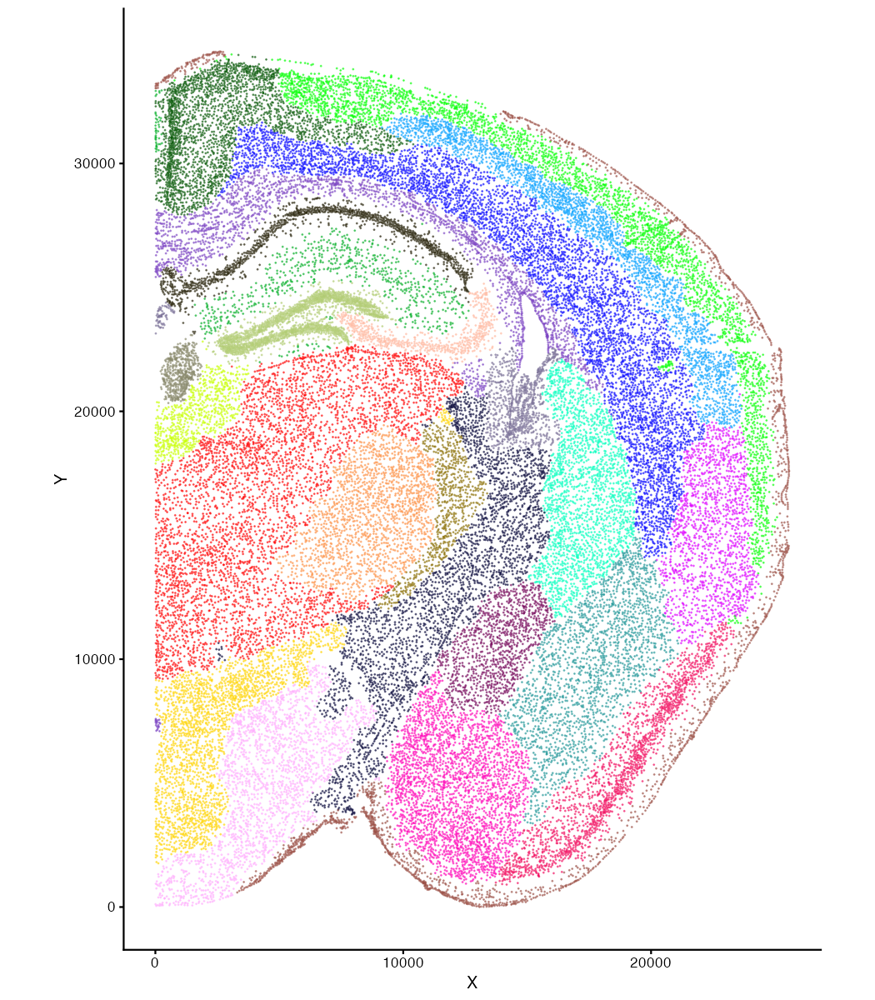

vignettes/domain-segment.Rmd
domain-segment.RmdHere, we demonstrate BANKSY domain segmentation on a STARmap PLUS dataset of the mouse brain from Shi et al. (2022).
library(Banksy)
library(data.table)
library(SummarizedExperiment)
library(SpatialExperiment)
library(scater)
library(cowplot)
library(ggplot2)Data from the study is available from the Single
Cell Portal. We analyze data from well11. The data
comprise 1,022 genes profiled at subcellular resolution in 43,341
cells.
#' Change paths accordingly
gcm_path <- "../data/well11processed_expression_pd.csv.gz"
mdata_path <- "../data/well11_spatial.csv.gz"
#' Gene cell matrix
gcm <- fread(gcm_path)
genes <- gcm$GENE
gcm <- as.matrix(gcm[, -1])
rownames(gcm) <- genes
#' Spatial coordinates and metadata
mdata <- fread(mdata_path, skip = 1)
headers <- names(fread(mdata_path, nrows = 0))
colnames(mdata) <- headers
#' Orient spatial coordinates
xx <- mdata$X
yy <- mdata$Y
mdata$X <- max(yy) - yy
mdata$Y <- max(xx) - xx
mdata <- data.frame(mdata)
rownames(mdata) <- colnames(gcm)
locs <- as.matrix(mdata[, c("X", "Y", "Z")])
#' Create SpatialExperiment
se <- SpatialExperiment(
assay = list(processedExp = gcm),
spatialCoords = locs,
colData = mdata
)Run BANKSY in domain segmentation mode with lambda=0.8.
This places larger weights on the mean neighborhood expression in
constructing the BANKSY matrix.
Note that the parameter values for domain segmentation for datasets generated using the older Visium v1 / v2 55um technologies are
lambda = 0.2andk_geom = 18. See the note in the tutorial on the main page for more details.
lambda <- 0.8
k_geom <- 30
npcs <- 50
set.seed(1000)
se <- Banksy::runBanksyPCA(se, lambda = lambda, npcs = npcs, k_geom = k_geom)
set.seed(1000)
se <- Banksy::clusterBanksy(se, lambda = lambda, npcs = npcs, resolution = 0.6)Cluster labels are stored in the colData slot:
head(colData(se))
#> DataFrame with 6 rows and 4 columns
#> X Y clust_M0_lam0.8_k50_res0.6 sample_id
#> <numeric> <numeric> <factor> <character>
#> 1 24225.5 23984.2 9 sample01
#> 2 24849.2 22679.1 9 sample01
#> 3 24488.3 22970.3 9 sample01
#> 4 24371.4 23727.5 9 sample01
#> 5 24362.2 23300.6 9 sample01
#> 6 24644.5 23112.8 9 sample01Visualize clustering results:
cnames <- colnames(colData(se))
cnames <- cnames[grep("^clust", cnames)]
plotColData(se, x = "X", y = "Y", point_size = 0.01, colour_by = cnames[1]) +
scale_color_manual(values = pals::glasbey()) +
coord_equal() +
theme(legend.position = "none")
options(width = 120)
sessioninfo::session_info()
#> ─ Session info ───────────────────────────────────────────────────────────────────────────────────────────────────────
#> setting value
#> version R version 4.5.1 (2025-06-13)
#> os Rocky Linux 9.8 (Blue Onyx)
#> system x86_64, linux-gnu
#> ui X11
#> language en
#> collate C.UTF-8
#> ctype C.UTF-8
#> tz America/Los_Angeles
#> date 2026-09-29
#> pandoc 3.11 @ /gpfs/scrubbed/jxlee/conda/envs/banksy-bench-2/bin/ (via rmarkdown)
#> quarto NA
#>
#> ─ Packages ───────────────────────────────────────────────────────────────────────────────────────────────────────────
#> package * version date (UTC) lib source
#> abind 1.4-8 2024-09-12 [1] CRAN (R 4.5.1)
#> aricode 1.1.0 2026-05-13 [1] CRAN (R 4.5.3)
#> Banksy * 1.9.2 2026-09-29 [1] local (/gpfs/projects/h2lab/jxlee/genome-institute/Banksy)
#> beachmat 2.26.0 2025-10-29 [1] Bioconductor 3.22 (R 4.5.2)
#> beeswarm 0.4.0 2021-06-01 [1] CRAN (R 4.5.1)
#> Biobase * 2.70.0 2025-10-29 [1] Bioconductor 3.22 (R 4.5.2)
#> BiocGenerics * 0.56.0 2025-10-29 [1] Bioconductor 3.22 (R 4.5.2)
#> BiocManager 1.30.27 2025-11-14 [1] CRAN (R 4.5.2)
#> BiocNeighbors 2.4.0 2025-10-29 [1] Bioconductor 3.22 (R 4.5.2)
#> BiocParallel 1.44.0 2025-10-29 [1] Bioconductor 3.22 (R 4.5.2)
#> BiocSingular 1.26.1 2025-11-17 [1] Bioconductor 3.22 (R 4.5.2)
#> BiocStyle * 2.38.0 2025-10-29 [1] Bioconductor 3.22 (R 4.5.2)
#> bookdown 0.47 2026-06-16 [1] CRAN (R 4.5.3)
#> bslib 0.12.0 2026-08-04 [1] CRAN (R 4.5.3)
#> cachem 1.1.0 2024-05-16 [1] CRAN (R 4.5.1)
#> cli 3.6.6 2026-04-09 [1] CRAN (R 4.5.3)
#> codetools 0.2-20 2024-03-31 [1] CRAN (R 4.5.1)
#> cowplot * 1.2.0 2025-07-07 [1] CRAN (R 4.5.1)
#> data.table * 1.18.6.1 2026-08-24 [1] CRAN (R 4.5.3)
#> dbscan 1.2.6 2026-08-25 [1] CRAN (R 4.5.3)
#> DelayedArray 0.36.1 2026-03-31 [1] Bioconductor 3.22 (R 4.5.3)
#> desc 1.4.3 2023-12-10 [1] CRAN (R 4.5.1)
#> dichromat 2.0-1 2026-07-22 [1] CRAN (R 4.5.3)
#> digest 0.6.39 2025-11-19 [1] CRAN (R 4.5.2)
#> dplyr 1.2.1 2026-04-03 [1] CRAN (R 4.5.3)
#> evaluate 1.0.5 2025-08-27 [1] CRAN (R 4.5.1)
#> farver 2.1.2 2024-05-13 [1] CRAN (R 4.5.1)
#> fastmap 1.2.0 2024-05-15 [1] CRAN (R 4.5.1)
#> fs 2.1.0 2026-04-18 [1] CRAN (R 4.5.3)
#> generics * 0.1.4 2025-05-09 [1] CRAN (R 4.5.1)
#> GenomicRanges * 1.62.1 2025-12-08 [1] Bioconductor 3.22 (R 4.5.2)
#> ggbeeswarm 0.7.3 2025-11-29 [1] CRAN (R 4.5.2)
#> ggplot2 * 4.0.3 2026-04-22 [1] CRAN (R 4.5.3)
#> ggrepel 0.9.8 2026-03-17 [1] CRAN (R 4.5.3)
#> glue 1.8.1 2026-04-17 [1] CRAN (R 4.5.3)
#> gridExtra 2.3.1 2026-06-25 [1] CRAN (R 4.5.3)
#> gtable 0.3.6 2024-10-25 [1] CRAN (R 4.5.1)
#> htmltools 0.5.9 2025-12-04 [1] CRAN (R 4.5.2)
#> htmlwidgets 1.6.4 2023-12-06 [1] CRAN (R 4.5.1)
#> igraph 2.3.3 2026-06-26 [1] CRAN (R 4.5.3)
#> IRanges * 2.44.0 2025-10-29 [1] Bioconductor 3.22 (R 4.5.2)
#> irlba 2.3.7 2026-01-30 [1] CRAN (R 4.5.2)
#> jquerylib 0.1.4 2021-04-26 [1] CRAN (R 4.5.1)
#> jsonlite 2.0.0 2025-03-27 [1] CRAN (R 4.5.1)
#> knitr 1.52 2026-09-06 [1] CRAN (R 4.5.3)
#> lattice 0.23-1 2026-08-12 [1] CRAN (R 4.5.3)
#> leidenAlg 1.1.8 2026-05-31 [1] CRAN (R 4.5.3)
#> lifecycle 1.0.5 2026-01-08 [1] CRAN (R 4.5.2)
#> magick 2.9.1 2026-02-28 [1] CRAN (R 4.5.2)
#> magrittr 2.0.5 2026-04-04 [1] CRAN (R 4.5.3)
#> Matrix 1.7-6 2026-07-25 [1] CRAN (R 4.5.3)
#> MatrixGenerics * 1.22.0 2025-10-29 [1] Bioconductor 3.22 (R 4.5.2)
#> matrixStats * 1.5.0 2025-01-07 [1] CRAN (R 4.5.1)
#> mclust 6.1.3 2026-07-05 [1] CRAN (R 4.5.3)
#> otel 0.2.0 2025-08-29 [1] CRAN (R 4.5.1)
#> pillar 1.11.1 2025-09-17 [1] CRAN (R 4.5.1)
#> pkgconfig 2.0.3 2019-09-22 [1] CRAN (R 4.5.1)
#> pkgdown 2.1.3 2025-05-25 [1] CRAN (R 4.5.1)
#> R6 2.6.1 2025-02-15 [1] CRAN (R 4.5.1)
#> ragg 1.5.2 2026-03-23 [1] CRAN (R 4.5.3)
#> RColorBrewer 1.1-3 2022-04-03 [1] CRAN (R 4.5.1)
#> Rcpp 1.1.2 2026-07-05 [1] CRAN (R 4.5.3)
#> RcppHungarian 0.3 2023-09-05 [1] CRAN (R 4.5.3)
#> rjson 0.2.23 2024-09-16 [1] CRAN (R 4.5.1)
#> rlang 1.3.0 2026-07-05 [1] CRAN (R 4.5.3)
#> rmarkdown 2.32 2026-09-01 [1] CRAN (R 4.5.3)
#> rsvd 1.0.5 2021-04-16 [1] CRAN (R 4.5.1)
#> S4Arrays 1.10.1 2025-12-01 [1] Bioconductor 3.22 (R 4.5.2)
#> S4Vectors * 0.48.1 2026-04-05 [1] Bioconductor 3.22 (R 4.5.3)
#> S7 0.2.2 2026-04-22 [1] CRAN (R 4.5.3)
#> sass 0.4.10 2025-04-11 [1] CRAN (R 4.5.1)
#> ScaledMatrix 1.18.0 2025-10-29 [1] Bioconductor 3.22 (R 4.5.2)
#> scales 1.4.0 2025-04-24 [1] CRAN (R 4.5.1)
#> scater * 1.38.1 2026-03-20 [1] Bioconductor 3.22 (R 4.5.3)
#> sccore 1.0.7 2026-04-06 [1] CRAN (R 4.5.3)
#> scuttle * 1.20.0 2025-10-30 [1] Bioconductor 3.22 (R 4.5.2)
#> Seqinfo * 1.0.0 2025-10-29 [1] Bioconductor 3.22 (R 4.5.2)
#> sessioninfo 1.2.4 2026-06-04 [1] CRAN (R 4.5.3)
#> SingleCellExperiment * 1.32.0 2025-10-29 [1] Bioconductor 3.22 (R 4.5.2)
#> SparseArray 1.10.10 2026-03-30 [1] Bioconductor 3.22 (R 4.5.3)
#> SpatialExperiment * 1.20.0 2025-10-29 [1] Bioconductor 3.22 (R 4.5.2)
#> SummarizedExperiment * 1.40.0 2025-10-29 [1] Bioconductor 3.22 (R 4.5.2)
#> systemfonts 1.3.2 2026-03-05 [1] CRAN (R 4.5.2)
#> textshaping 1.0.4 2025-10-10 [1] CRAN (R 4.5.1)
#> tibble 3.3.1 2026-01-11 [1] CRAN (R 4.5.2)
#> tidyselect 1.2.1 2024-03-11 [1] CRAN (R 4.5.1)
#> uwot 0.2.5 2026-08-29 [1] CRAN (R 4.5.3)
#> vctrs 0.7.3 2026-04-11 [1] CRAN (R 4.5.3)
#> vipor 0.4.7 2023-12-18 [1] CRAN (R 4.5.1)
#> viridis 0.6.5 2024-01-29 [1] CRAN (R 4.5.1)
#> viridisLite 0.4.3 2026-02-04 [1] CRAN (R 4.5.2)
#> withr 3.0.3 2026-06-19 [1] CRAN (R 4.5.3)
#> xfun 0.60 2026-07-09 [1] CRAN (R 4.5.3)
#> XVector 0.50.0 2025-10-29 [1] Bioconductor 3.22 (R 4.5.2)
#> yaml 2.3.12 2025-12-10 [1] CRAN (R 4.5.2)
#>
#> [1] /gpfs/scrubbed/jxlee/conda/envs/banksy-bench-2/lib/R/library
#> * ── Packages attached to the search path.
#>
#> ──────────────────────────────────────────────────────────────────────────────────────────────────────────────────────